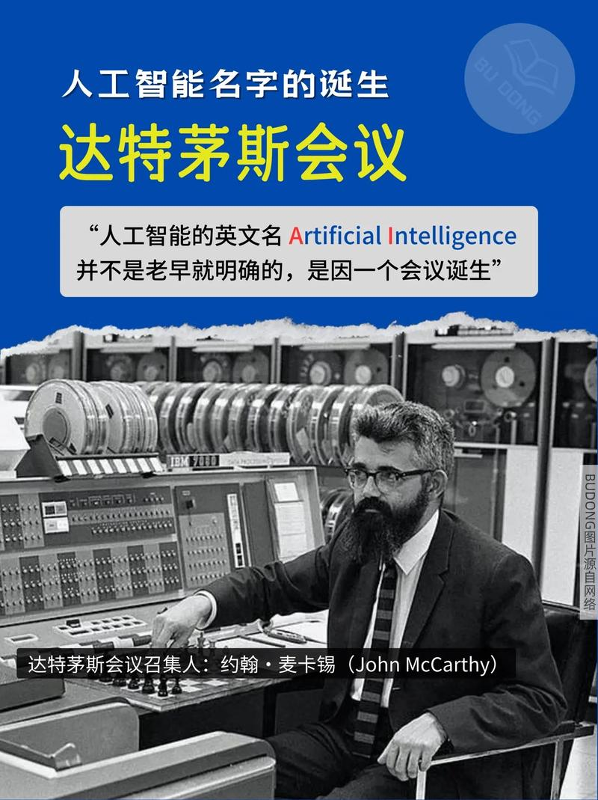
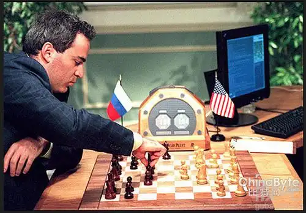
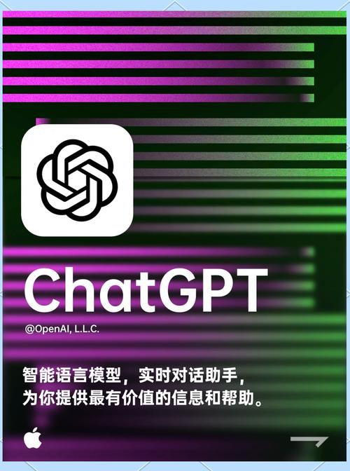

人工智能发展史
从理论到实践的智能革命之旅
1943
理论奠基期
麦卡洛克-皮茨神经元模型提出，这是第一个人工神经网络的数学模型，为后来的神经网络研究奠定了理论基础。
重要成就:
提出人工神经元概念
建立了神经网络的数学基础
开创了计算神经科学领域
1956
诞生时期
达特茅斯会议在美国新罕布什尔州举行，"人工智能"这一术语首次被正式提出，标志着AI作为一门学科的正式诞生。
重要成就:
首次提出"人工智能"概念
确立了AI研究的基本方向
汇聚了众多AI先驱研究者
相关图片

1956年达特茅斯会议标志着AI的正式诞生
1957
算法突破
感知机算法由Frank Rosenblatt提出，这是第一个具有学习能力的人工神经网络算法，开启了机器学习的新纪元。
重要成就:
提出感知机学习算法
实现了第一代神经网络
为模式识别奠定基础
1969
首次低谷
Minsky和Papert出版《感知机》一书，证明了单层感知机的局限性，引发了第一次AI寒冬，导致研究资金大幅削减。
重要事件:
揭示感知机算法的局限
引发第一次AI寒冬
促使研究转向其他方向
1986
神经网络复兴
反向传播算法由Rumelhart、Hinton和Williams重新推广，使得多层神经网络成为可能，AI研究重新焕发活力。
重要成就:
推广反向传播算法
实现多层神经网络训练
推动深度学习发展
1997
里程碑成就
IBM的深蓝计算机在国际象棋比赛中击败世界冠军卡斯帕罗夫，标志着AI在特定领域超越了人类专家水平。
重要成就:
深蓝击败卡斯帕罗夫
证明AI在特定领域的能力
提升公众对AI的认知
相关图片

深蓝计算机击败国际象棋世界冠军
2006
深度学习兴起
Geoffrey Hinton在《Science》上发表论文，提出深度信念网络，开启了深度学习的新时代，使得神经网络研究重新成为热点。
重要成就:
提出深度信念网络
解决深层网络训练问题
引发深度学习革命
2012
突破性进展
AlexNet在ImageNet比赛中以压倒性优势获胜，深度学习在计算机视觉领域取得重大突破，标志着深度学习时代的正式到来。
重要成就:
AlexNet在ImageNet获胜
深度学习在CV领域突破
推动GPU加速训练发展
2016
游戏AI巅峰
DeepMind的AlphaGo在围棋比赛中击败世界冠军李世石，这一成就被认为在复杂策略游戏中AI超越了人类最高水平。
重要成就:
AlphaGo击败李世石
在围棋领域超越人类
展示强化学习威力
相关图片
AlphaGo在围棋比赛中击败人类世界冠军
2020
大模型时代
GPT-3等大型语言模型展现出惊人的语言理解和生成能力，引发了关于AGI可能性的广泛讨论，AI开始走向通用化应用。
重要成就:
GPT-3展现强大语言能力
大模型走向通用化
推动AI产业化应用
2022
生成式AI爆发
ChatGPT的发布引爆了生成式AI的热潮，用户可以直接与AI进行自然语言交互，标志着AI从实验室走向大众的转折点。
重要成就:
ChatGPT引爆生成式AI
自然语言交互普及
AI应用全面爆发
相关图片

ChatGPT引爆生成式AI应用热潮
2023
多模态AI时代
GPT-4V、DALL-E 3等多模态模型能够同时理解和生成文本、图像、音频等多种形式的内容，AI真正实现了多模态理解和创作。
重要成就:
多模态AI模型成熟
文本、图像、音频统一处理
AI创作能力大幅提升
2024
AGI探索时代
随着模型规模的不断扩大和算法的持续改进，研究者开始探索人工通用智能(AGI)的可能性，AI正在向更加智能和通用的方向发展。
未来展望:
AGI研发加速推进
AI与其他领域深度融合
智能时代全面到来